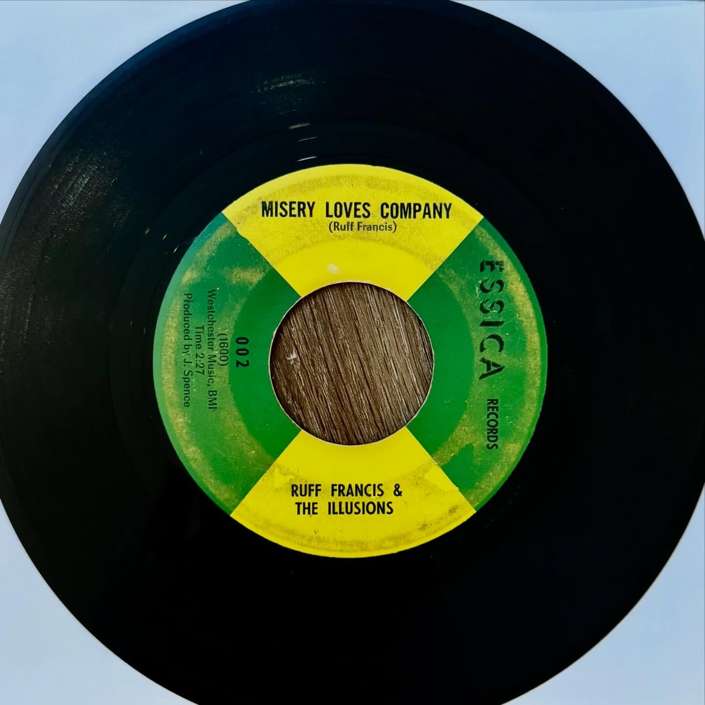

Ruff Francis and the Illusions
Give Me Mercy / Misery Loves Company



record information
- artist
- Ruff Francis and the Illusions
- a-side
- Give Me Mercy
- b-side
- Misery Loves Company
- label
- Essica
- catalog no.
- 002
- year / pressing
- 1966
research / notes
Cataloged as Essica 002 (1966); A/B order follows the discography, which differs from the wording in the user's caption.
original collection notes
I don’t usually go out of my way to pick up soul-funk records, as my collection lean way more country and rockabilly, but every now and then something cuts through.
I first heard this one at Groove Merchant in SF. That chorus “MISERY LOVES COMPANY” completely hooked me. Tried to buy it on the spot, but it was part of a personal NFS stack, so it just sat in my head for months. I finally found a copy at an old record shop in south-ish end of Chicago ^_^
What’s fascinating is that The Illusions seem to be a garage rock band (?), yet the track leans hard into soul. I love how the super funky vocals are performed onto a rougher, rock-driven instrumental. It gives the whole thing this slightly off-kilter energy that really works. The B-side, “Give Me Mercy,” really shines on the guitars that are super rhythmic, almost hypnotic in a sense.
The label itself comes out of St. Louis, run by Matt McKinney (named after his wife, Jessica). He was connected with Harvey Fuqua and apparently had ambitions of breaking into the Motown… which obviously did not happen lol
Anyways both sides an absolute stomper and a great record highly recommend
posted · no. 004